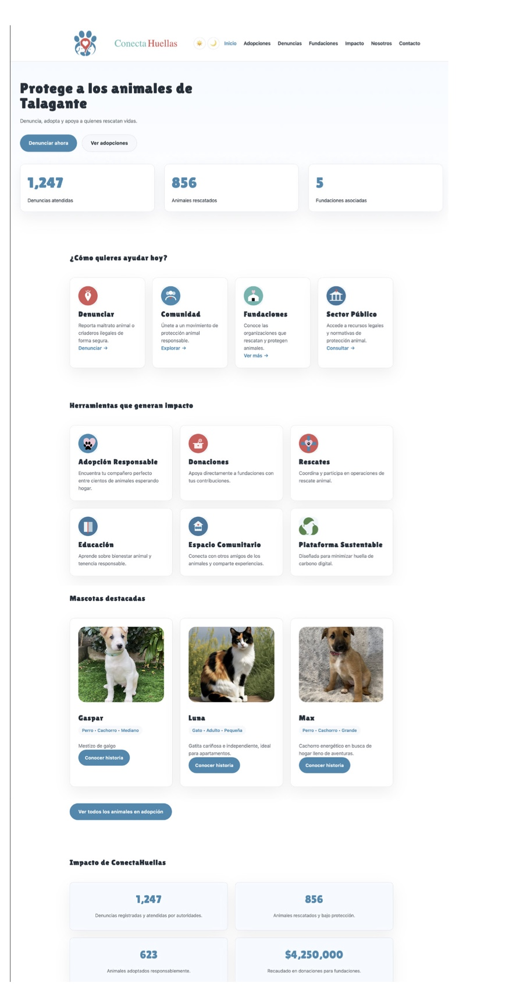
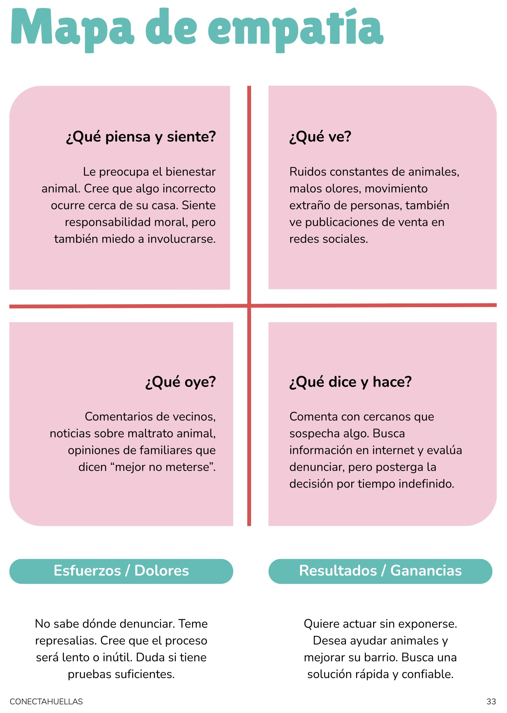
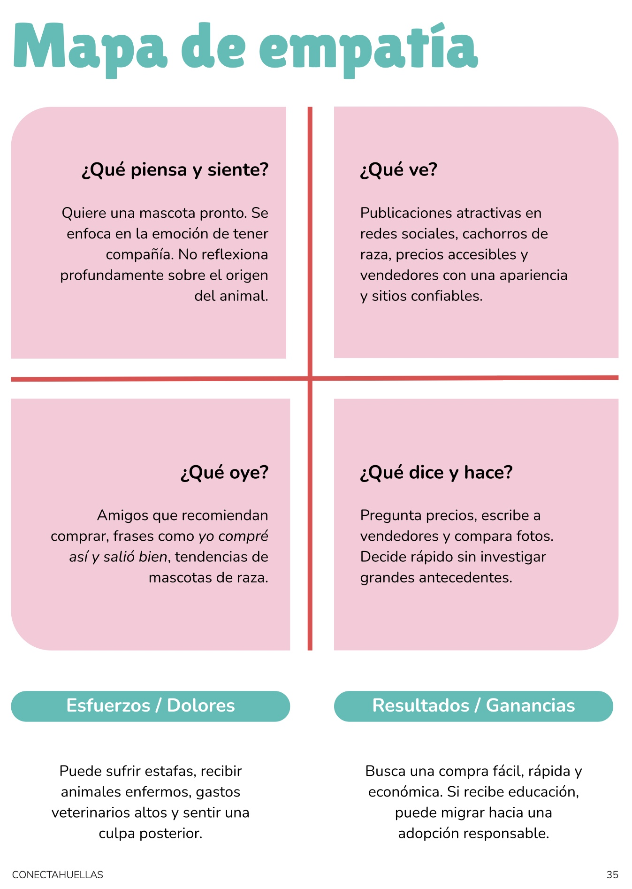
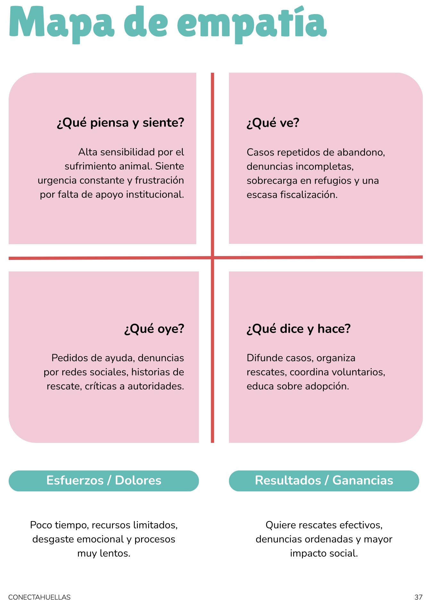
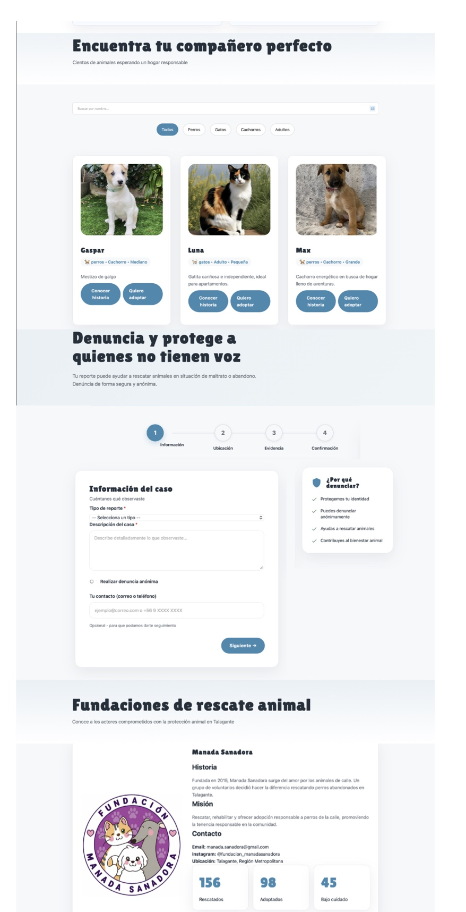
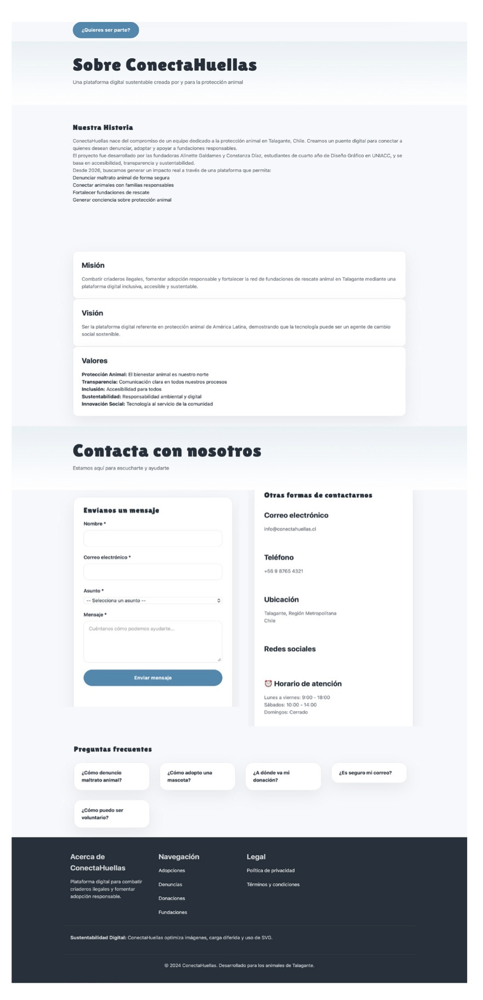
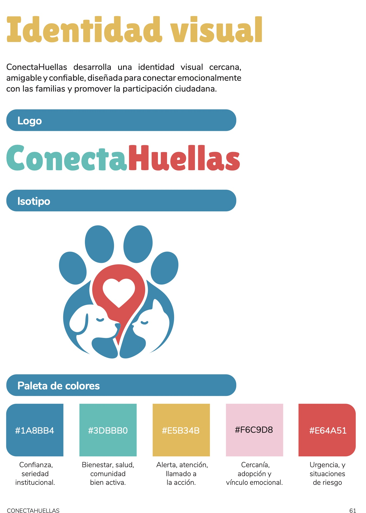
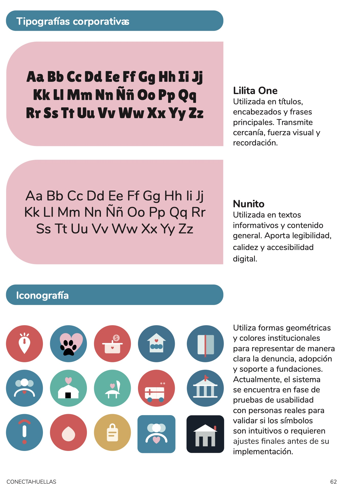
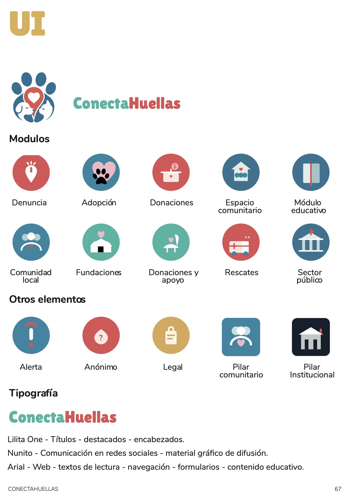

Caso de estudio Talagante, Chile
Conecta
Huellas
Una propuesta digital y gráfica para visibilizar criaderos ilegales, orientar las denuncias ciudadanas y promover la protección animal en Talagante.
Diseño y desarrollo del proyecto: Alinette Galdames y Constanza Díaz
Explorar la propuestaPropuesta visual contenido de muestra

01 — Contexto
Una conexión para actuar mejor.
El proyecto plantea una plataforma que acerque a vecinos, organizaciones de rescate y entidades públicas frente a situaciones de riesgo animal.
El desafío
El informe identifica canales de denuncia poco claros, desinformación y una fiscalización limitada en sectores rurales y periurbanos. A esto se suma la sobrecarga de las organizaciones de rescate.
La respuesta propuesta
Centralizar orientación y denuncias, facilitar la derivación de casos y sumar contenidos de educación preventiva mediante una experiencia digital accesible.
- Territorio
- Talagante, Chile
- Enfoque
- Protección y bienestar animal
- Encuesta
- 21 residentes
La encuesta fue exploratoria y no representa estadísticamente a toda la población de Talagante.
02 — Investigación
Entender antes de diseñar.
La exploración destaca necesidades de orientación confiable, denuncia anónima y educación para tomar decisiones responsables.
- 01
Contar con un canal claro para reportar una situación sin exponerse.
- 02
Recibir orientación y seguimiento comprensibles durante el proceso.
- 03
Acceder a información preventiva sobre bienestar y tenencia responsable.
Mapas de empatía
Perfiles de trabajo incluidos en el informe; no se presentan como testimonios de participantes reales.



03 — Experiencia
De una alerta a una derivación.
El informe plantea un recorrido de denuncia y coordinación entre ciudadanía, fundaciones y organismos competentes.
- 01
Reportar
La persona entrega información de una posible situación de riesgo.
- 02
Evaluar
La propuesta contempla una revisión inicial por parte de una organización de rescate.
- 03
Derivar
Según el caso, se considera coordinar apoyo con rescatistas, municipio u organismos pertinentes.
Este recorrido describe la propuesta del informe. No implica que el servicio esté activo ni que haya sido validado formalmente con integrantes de la fundación.
04 — Estructura
Primero, ordenar la experiencia.
Wireframes originales para navegador y celular. Muestran jerarquía y módulos antes de aplicar la interfaz visual.


Los wireframes incluyen módulos conceptuales; adopción y donaciones se presentan como ideas para etapas futuras.
05 — Diseño de interfaz
Una propuesta visual cercana y clara.
Las pantallas finales priorizan navegación directa, información legible y acceso a los recorridos principales.


Las pantallas son propuestas del informe, no un sitio desplegado. Textos, métricas, fichas y datos de contacto visibles son contenido de muestra; adopción y donaciones se consideran futuras.
06 — Sistema visual
Una identidad amable y reconocible.
El sistema combina una paleta cálida, tipografía expresiva e iconografía para diferenciar los módulos de la plataforma.



El informe señala que los iconos aún requerían pruebas de usabilidad antes de una posible implementación.
07 — Créditos
Un proyecto colaborativo.
Diseño y desarrollo del proyecto
Alinette Galdames Constanza Díaz